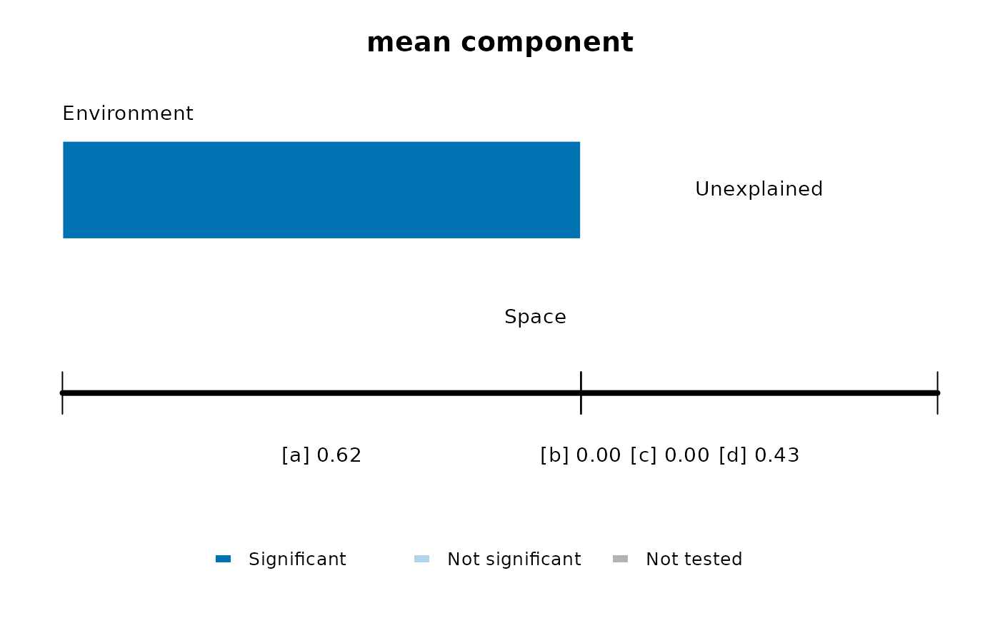

Draws one bar for each fraction of trait_partition(): a for the environment alone,
b for what the environment and space share, and c for space alone. The unexplained
fraction d is given below the plot, as it would hide the others. Dark bars are
significant, and b has no test, so it is grey.
Arguments
- x
Result of
trait_partition().- value
Column of the fractions to show:
"r2_adjusted","r2", or"r2_component"for the share of the mean or variance component.- test
Permutation test:
"max"for the larger p-value of sites and species,"site"or"taxa".- alpha
Significance level.
- col
Colour of significant bars.
- ...
Other arguments of
graphics::barplot().
Details
Negative fractions are shown as zero, following Legendre (2008). The result of
trait_partition() keeps them, because all fractions sum to one only with them.
References
Legendre, P. (2008). Studying beta diversity: ecological variation partitioning by multiple regression and canonical analysis. Journal of Plant Ecology, 1, 3–8. doi:10.1093/jpe/rtm001
Examples
set.seed(1)
trait <- stats::setNames(seq(0, 100, 10), letters[1:11])
env <- runif(40, 0, 100)
space <- cbind(runif(40), runif(40))
comm <- outer(env, trait, function(e, t) exp(-(e - t)^2 / 800))
colnames(comm) <- names(trait)
out <- trait_partition(comm, trait, env, space, n_perm = 49)
plot_trait_partition(out)
